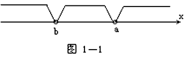
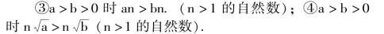
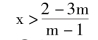
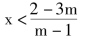
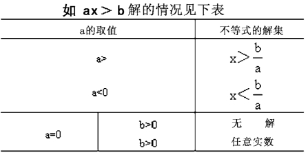
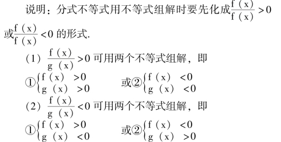
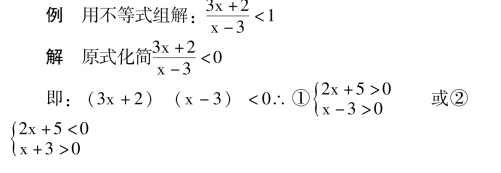
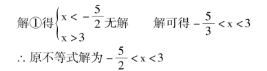

一元一次不等式和不等式组
【不等式】
表示不相等关系的式子(用不等号>、<、≠连结两个代数式所成的式子).
不等式可分为(1) 绝对不等式: 不等式中的字母代表任何数时，不等式都成立.(2) 条件不等式: 字母只能代表特定的值，不等式才成立.(3) 矛盾不等式: 不可能成立的不等式.
如a2＋b2≥0，－2 > －5，是绝对不等式；2x ＋1 >0，x2>4，是条件不等式；8<7，a2＋b2<2ab 是矛盾不等式.
说明: (1) a>b 与a－b>0 或b－a<0 所表示的意义相同.a>b 的几何意义是代表a 的点比代表b 的点更靠近数轴的箭头方向.(2) a<b 与a－b<0 或b －a >0 所表示的意义相同.(3) a≠b 与a >b 或a <b 的意义相同.(4)不等式在数轴上代表一个范围.在图1 －1 中表示: x≥a，b<x≤a.x<b 三个范围.

注意: 包含a 时画成实点，不包含b 时画成圈.
【不等式的基本性质】
(1) 不等式的两边都加上(或都减去) 同一个数，不等号的方向不变.
(2) 不等式的两边都乘以(或都除以) 同一个正数，不等号的方向不变.
(3) 不等式的两边都乘以(或都除以) 同一个负数，不等号的方向改变.
说明: (1) 不等式还有以下性质:
①如果a>b，那么b<a；②如果a >b，b >c，那么a>c；

(2) 不等式两边如同乘以零，则变成等式.
【不等式的解集】
条件不等式中能使不等式成立的字母(未知数) 所代表的取值范围，叫不等式的解集(即不等式解的集合).解集中每一个数都是不等式的解.
例 2x ＋8<0 的解集是x< －4，凡在解集范围中的每一个数叫不等式的解.如x ＝－5，x ＝－8 等都是不等式的解.
【解不等式】
求不等式解集的过程叫解不等式.
【同解不等式】
两个不等式它们的解集相同时，这两个不等式叫同解不等式.
【不等式的同解原理】
(1) 不等式的两边都加上(或都减去) 同一个数或同一个整式，所得的不等式与原不等式是同解不等式.
(2) 不等式的两边都乘以(或都除以) 同一个正数，所得的不等式与原不等式是同解不等式.
(3) 不等式的两边都乘以(或都除以) 同一个负数，并且把不等号改变方向后，所得的不等式与原不等式是同解不等式.
说明: (1) 不等式的基本性质是所有不等式都具有的，而同解不等式的同解原理是条件不等式中所特有.因为只有条件不等式才有不等式的解集.(2) 把不等式中的任何一项改变其符号后，从不等号的一边移到另一边，所得的不等式与原不等式是同解不等式.
【不等式的元】
不等式中含有未知数的个数叫不等式的元.含有几种不同的未知数就叫几元不等式.
【不等式的次】
不等式中未知数的最高次数叫不等式的次.分式不等式，无理不等式一般不称它为几次，只说它能化成几次不等式，“次” 是在整式不等式中论及的.
【一元一次不等式的解法】
根据不等式同解变形原理，仿照解方程的方法，找出不等式的解集.
【解一元一次不等式的步骤】
(1) 去分母(不等式两边同乘以分母的最小公倍数)；
(2) 去括号；
(3) 移项；
(4) 合并同类项；
(5) 不等式两边都除以未知数的系数.
注意: 如果同乘以或同除以同一个负数时，不等式要改变不等号的方向.
例 解关于x 的不等式mx－2>x－3m.
解 mx－x>2－3m，(m－1) x>2－3m，
讨论: ①当m—1>0 即m>1 时

②当m－1<0 即m<1 时

③当m－1 ＝0 即m ＝1 时
不等式变为0·x>2－3×1 即0·x> －1
x 为任意实数.
说明: 解字母系数不等式要进行讨论，整理后一般分为系数>0；系数<0；系数＝0.系数>0 时，不等式的解与原不等式同向；系数<0 时，不等式的解与原不等式异向；系数＝0 时，把它代入变形，如成为绝对不等式时，则为任意解，为矛盾不等式时，无解.

【一元一次不等式组】
几个一元一次不等式所组成的不等式组，叫做一元一次不等式组.
【不等式组的解集】
不等式组中所有不等式的解集的公共部分叫做这个不等式组的解集.
只要有一个不等式无解，不等式组就无解.

分式不等式组还可以化成积的形式，解法见二次不等式的解法.


说明: (1) 不等式组中不等式的个数不定.(2) 不等式解出不含未知数的不等式时，如是绝对不等式，则x 可取任意值；如是矛盾不等式，不等式无解.
注意: 解不等式组求各不等式的公共解时，可以在同一数轴上画图，找出它们的公共部分.